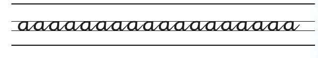
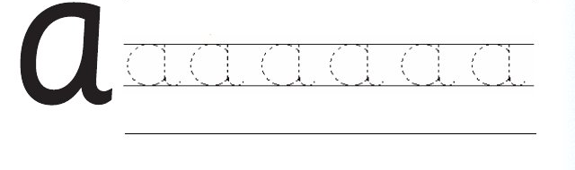

Lugha ya Kiswahili ina aina mbili za sauti. Sauti hizo ni
1. Irabu
2. Konsonanti
Katika sura hii utajifunza kuandika herufi ndogo za
irabu.
Somo la kwanza
Kuandika herufi ndogo za irabu
Kuna herufi za irabu tano katika lugha ya Kiswahili.
Herufi za irabu hizo ni aeiou.
Katika somo hili utajifunza kuandika herufi ya irabu a.
Chora mchoro huu kwenye daftari.

Mchoro unaonyesha mstari wa juu wenye herufi ndogo a zilizoandikwa kwa mwandiko wa kuunga na kurudiwa mara nyingi. Kuna mistari mitatu ya kuongoza: mstari wa juu, mstari wa katikati na mstari wa chini. Mwanafunzi afuate herufi hizo kutoka kushoto kwenda kulia, kisha ajaribu kuandika herufi a kwenye mstari wa chini.
Andika jibu kwa mkono katika sehemu hii.
Fuatisha herufi ya irabu a.

Mchoro unaonyesha herufi kubwa a upande wa kushoto na mifano sita ya herufi ndogo a zilizochorwa kwa alama za nukta upande wa kulia. Mwanafunzi aanzie juu ya kila herufi yenye nukta, afuate mzunguko wa herufi hadi mwisho, kutoka kushoto kwenda kulia, kisha aandike herufi a mwenyewe kwenye mstari wa chini.